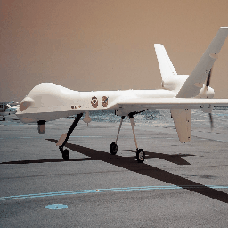

Eric Dolores

I am an activist, mathematician and machine learning consultant.
I have a PhD in Mathematics from Northwestern University, and worked as an Postdoctoral Associate at Florida State University working in Machine Learning from January 2018 until June 2019. I’ve been working at NewSci Labs since July 2019; there, I develop machine learning technologies using Google Cloud Platform with Pytorch. I use my analytic skills to optimize NewSci's ML products and create new algorithms to work with images. I have experience creating custom GANs and CNN. You can learn more at my LinkedIn page.
Preprint:
While I was an undergraduate, I demonstrated how to extend the Cauchy-Hadamard theorem to quaternionic analysis; the methods allowed us to prove a couple of Abel's theorems about convergence of (hyperholomorphic) series and to find a bigger region of convergence than the standard sphere.
- Convergence of Taylor Series of real normed division algebras. link.
ML projects:
2020 Data Jam for Newspaper Navigator Library of Congress. We chose headlines related to tragedies that occurred in 1910 and selected headlines related to those tragedies to train an algorithm into learning to create fake headlines using the style and phrasing of that fixed year. The algorithm takes a user-generated phrase negating the tragedy and completes it as if those tragedies didn't occur. Colab Notebook
Consultation with the Department of Geography at FSU: Organized and hosted bimonthly meetings to discuss possible ML projects with geographical data.
Trained GPT2 in math arxiv papers and created fake abstracts. The algorithm can create abstracts that undergraduate students cannot recognize as fake but cannot convince PhD students, as the abstracts are grammatically correct but made no mathematical sense.
Worked as organizer of the 2019 EBook “ Machine Learning For Humans” at the Department of Scientific Computing at FSU.

Activism:
I’ve been working with teams in Mexico that search for missing people since 2014. Usually we search for missing people who lived in or were near regions with no electricity or the latest technology. Since members of the team in Mexico don't know how to program and they cannot afford buying GPU's, I look for solutions for these accessibility issues.
I created a program that finds common phrases within pdf files to help researchers chase mills that create fake research papers. RAMO.
Chicago-based artist Justus Harris and I won first place at Adaption 2017 in the category “Art + Data”. Adaptation is an EU commission-funded competition and exhibit that highlights the potential of the “Internet of things”. We exhibited our work in Berlin, Germany.Adaptation, Fountains
In 2012, I volunteered to organize an international cultural protest in Mexico; there, I coordinated the creation of a book about indigenous poetry and gave advise about art expositions in Chicago, among other peaceful activities.
Volunteer at AccessibleNU. I helped a couple of students with disabilities catch up on their math courses.
Teaching/Tutoring:
Co-tutored two FSU undergraduate students in UROP (the Undergraduate Research Opportunity Program) on their projects analyzing Tropical Forest data.
Tutored two FSU students on the project "Translation from the Urban Dictionary". I helped them webscrap the database of definitions, and guided them to write a Python script that, given an input phrase, substitutes the words by their definitions according to the dictionary.
Taught Math 234 (Multivariable Calculus) at Northwestern University during Summer 2015.
Coordinated the chess team at West Nottingham Academy in Maryland in 2017. Won in multiple places in the 4th Annual Mid-Atlantic Grade Championship: - First place in the 9th grade teams category. - Second place in the 11/12th grade teams category. - 3th place in an individual performance for 9th grade. - 5th place in an individual performance for 11/12th grade.
Other projects:
I participated in the project "COMPUTING & THE ECONOMY IN THE ANTHROPOCENES" by the Georgia-based artist Sara Milkes; I have a card in the “The Oracle Deck for Computing and the Economy in the Anthropocenes”, shown below.

Pure Mathematics:
My conjecture is that 49x2^n has always an odd digit.
“Associators, Formality and Invariants” Seminar at Northwestern University. I have spent time learning about; non-commutativity and analysis with Dr. Shapiro Fishman, Homotopy and categories with Dr. Lupercio Lara, and Operads with Dr. Dmitry Tamarkin. I am intrigued by the theory of Drinfeld associators, so I organized a seminar called “Associators, Formality and Invariants” where I talked about EK-quantization of Lie bi-algebras, Homotopy Gerstenhaber algebras and formality, among other topics. Below are some notes from the seminar.
Notes from Dr. Licata's course: Braid group actions from representation theory).
My own notes on A infinity algebras.
My own notes on Genus-zero TQFTs and operads from the seminar on: Reshetikhin Turaev Invariants.